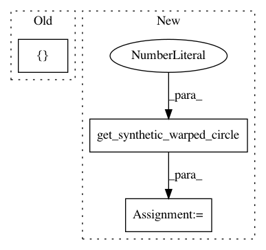

b67ace1dca1e2fd6511ef6e05923762b1b569b1d,dipy/align/tests/test_imwarp.py,,test_cc_2d,#,487
Before Change
metric = metrics.CCMetric(2, sigma_diff, radius)
//Configure and run the Optimizer
opt_iter = [25, 50, 100]
optimizer = imwarp.SymmetricDiffeomorphicRegistration(metric, opt_iter)
mapping = optimizer.optimize(static, moving, None)
subsampled_energy_profile = optimizer.full_energy_profile[::5]
After Change
one.
"""
moving, static = get_synthetic_warped_circle(1)
//Configure the metric
sigma_diff = 3.0
radius = 4
In pattern: SUPERPATTERN
Frequency: 4
Non-data size: 3
Instances
Project Name: nipy/dipy
Commit Name: b67ace1dca1e2fd6511ef6e05923762b1b569b1d
Time: 2014-04-13
Author: jomaroceguedag@gmail.com
File Name: dipy/align/tests/test_imwarp.py
Class Name:
Method Name: test_cc_2d
Project Name: nipy/dipy
Commit Name: b67ace1dca1e2fd6511ef6e05923762b1b569b1d
Time: 2014-04-13
Author: jomaroceguedag@gmail.com
File Name: dipy/align/tests/test_imwarp.py
Class Name:
Method Name: test_em_2d
Project Name: nipy/dipy
Commit Name: b67ace1dca1e2fd6511ef6e05923762b1b569b1d
Time: 2014-04-13
Author: jomaroceguedag@gmail.com
File Name: dipy/align/tests/test_imwarp.py
Class Name:
Method Name: test_cc_3d
Project Name: nipy/dipy
Commit Name: b67ace1dca1e2fd6511ef6e05923762b1b569b1d
Time: 2014-04-13
Author: jomaroceguedag@gmail.com
File Name: dipy/align/tests/test_imwarp.py
Class Name:
Method Name: test_ssd_3d